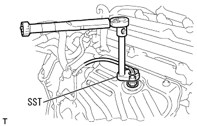

クウネンヒ センサ（1NZ-FE(4WD)） 取り付け
印刷
準備品一覧
1. クウネンヒ センサ取り付け

SSTを使用して、クウネンヒ センサをエキゾーストマニホールドに取り付ける。
SST
09224-00010
基準値
T = 44 N・m{ 449 kgf・cm }
T = 39 N・m{ 398 kgf・cm } SST+トルクレンチL26cm使用時)
□ 参 考 □
SST+トルクレンチL26cm使用時の基準値はSSTとトルクレンチを一直線上で使用した基準値である。
トルクレンチまたは角度を変えて使用する場合は基準値を求める必要がある。(要領は
参照)
クランプおよびコネクターを接続する。
 参照)
参照)